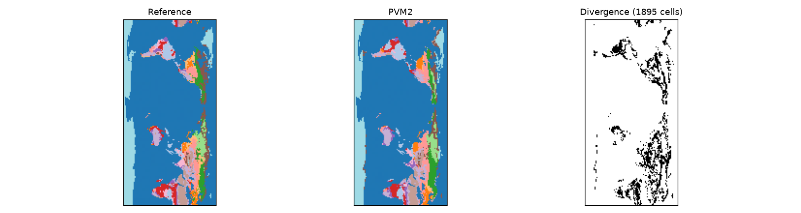

Generated 2026-11-15T15:36:26+00:00.
| Class | Observed | Modelled | Correct | Accuracy % | Kappa |
|---|---|---|---|---|---|
| 1 | 340 | 381 | 278 | 81.76 | 0.748 |
| 2 | 202 | 233 | 140 | 69.31 | 0.623 |
| 3 | 263 | 65 | 27 | 10.27 | 0.142 |
| 4 | 447 | 465 | 275 | 61.52 | 0.552 |
| 5 | 230 | 278 | 157 | 68.26 | 0.592 |
| 6 | 371 | 295 | 164 | 44.20 | 0.447 |
| 7 | 425 | 594 | 265 | 62.35 | 0.452 |
| 8 | 164 | 210 | 51 | 31.10 | 0.238 |
| 9 | 461 | 586 | 321 | 69.63 | 0.556 |
| 10 | 476 | 330 | 236 | 49.58 | 0.541 |
| 11 | 402 | 415 | 315 | 78.36 | 0.745 |
| 12 | 207 | 136 | 43 | 20.77 | 0.219 |
[[278, 0, 0, 0, 0, 16, 0, 0, 0, 0, 0, 46], [0, 140, 6, 6, 0, 1, 44, 1, 3, 0, 0, 1], [2, 51, 27, 61, 16, 2, 91, 0, 9, 0, 0, 4], [0, 7, 16, 275, 33, 0, 62, 0, 30, 22, 2, 0], [0, 0, 0, 10, 157, 0, 15, 0, 1, 47, 0, 0], [33, 2, 0, 0, 0, 164, 22, 104, 15, 0, 0, 31], [5, 27, 16, 17, 4, 9, 265, 1, 59, 8, 11, 3], [3, 0, 0, 0, 0, 28, 15, 51, 60, 0, 1, 6], [0, 1, 0, 0, 1, 5, 50, 23, 321, 5, 53, 2], [0, 0, 0, 96, 67, 0, 18, 0, 26, 236, 33, 0], [0, 0, 0, 0, 0, 0, 12, 2, 61, 12, 315, 0], [60, 5, 0, 0, 0, 70, 0, 28, 1, 0, 0, 43]]

{
"manifest": {
"version": "0.1.0",
"grid": [
96,
192
],
"co2_pa": 35.35,
"fire": true,
"equilibrium_years": 121,
"runtime_seconds": 19.145030599989695,
"outputs": "outputs\\original\\pvm2_original.nc",
"environment": {
"python": "3.11.9",
"platform": "Windows-10-10.0.26200-SP0",
"generated_utc": "2026-11-15T15:36:19+00:00",
"numpy": "2.4.6",
"xarray": "2026.9.0",
"netCDF4": "1.7.5.1.post1",
"rasterio": "1.4.4",
"pandas": "3.1.1"
},
"input_attrs": {
"source": "legacy direct-access binary"
}
},
"reference": "legacy/data/reference/Lapola_et_al_T062.bin"
}
{
"python": "3.11.9",
"platform": "Windows-10-10.0.26200-SP0",
"generated_utc": "2026-11-15T15:36:26+00:00",
"numpy": "2.4.6",
"xarray": "2026.9.0",
"netCDF4": "1.7.5.1.post1",
"rasterio": "1.4.4",
"pandas": "3.1.1"
}